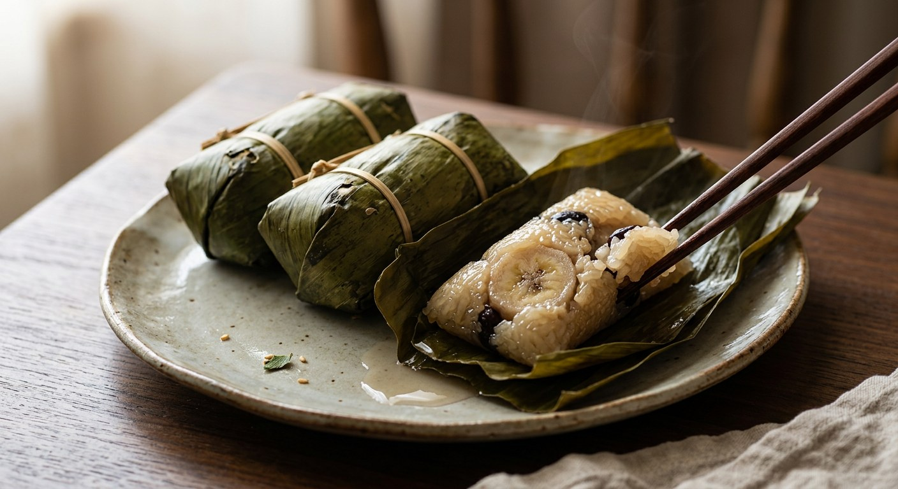

Sticky rice stir-fried in coconut cream until it gleams, wrapped in banana leaves around a banana and black beans, steamed for hours — a market sweet so old its name records the day it stopped being boiled.

ข้าวต้มมัด is a name in three parts: khao (rice), tom (boiled) and mat (tied). Yet almost nothing about the dish is boiled. Kapook records the older name, ข้าวต้มผัด — khao tom phad, "stir-fried boiled rice" — and the stir is the thing: glutinous rice is fried in coconut cream until it gleams before it ever meets a banana leaf. The Pantip seller's shop, ร้านข้าวต้มผัด แม่สุดใจ, still trades under the old name, and the formula she shares is built around that gloss: a ka thang wok so the rice stays fragrant and keeps longer, and the cream "cracked" — simmered until the oil separates — before the rice goes in.
Inside the leaf there is a banana, always — nam wa, the small starchy Thai banana, not a dessert banana — and, in most versions, black beans. The parcel is folded into a triangle, pleated at both ends like an origami boat, and joined to a second parcel so the pair can be tied together with soaked bamboo strips. Kapook's classic recipe tells you it is sold at every market in Thailand, and its taro-stuffed cousin (ไส้เผือก) is a one-word substitution.
The method tolerates everything except haste. Wongnai's "ancient" version makes the coconut milk by hand from two fresh coconuts over a charcoal fire, sweetens a kilo and a half of rice with a mere two tablespoons of sugar, and re-steams the leftovers the next day. Rin's Cookbook, the Kapook recipe with half a million reads, steams for up to two hours and warns that the only way to ruin the rice is to stir it too hard — the grains snap, and the sweet turns to porridge before it reaches the leaf.
| Thai | English | Amount |
|---|---|---|
| ข้าวเหนียวเขี้ยวงูดิบ | Glutinous rice, raw | 2 cups |
| ถั่วดำ | Black beans | ½ cup |
| หัวกะทิ | Coconut cream | 3 cups |
| เกลือป่น | Salt | 2 tsp |
| ใบเตย | Pandan leaves | a few |
| น้ำตาลทราย | Sugar | 1½ cups |
| กล้วยน้ำว้า | Nam wa bananas | 16–18 |
| ใบตองชั้นใน ขนาด 6x8 นิ้ว | Banana leaves, inner | 6×8 in |
| ใบตองชั้นนอก ขนาด 8x9 นิ้ว | Banana leaves, outer | 8×9 in |
| ตอก แช่น้ำ 2-3 ชั่วโมง | Bamboo strips, soaked 2–3 hours | for tying |
The market seller's batch (TrueID, ครัวพิศพิไล): 500 g new-crop glutinous rice soaked 4 hours, 500 ml coconut milk, 230 g sugar, 2 tsp salt — and a filling of steamed mung beans and toasted white sesame instead of black beans, with a pinch of salt rubbed on the cut banana so it never blackens. The shop formula (Pantip, แม่สุดใจ): 2 kg rice, 2 kg coconut milk squeezed from 1 kg grated coconut, 400 g sugar, 50 g salt, 2 bunches of banana, 200 g black beans — cream "cracked" first, then a 90-minute steam. The ancient bowl (Wongnai, GopOpOp): 1.5 kg rice soaked in hot water just 30 minutes, hand-squeezed coconut milk, only 2 tbsp sugar — nearly unsweetened, as the old versions were.
The beans. Black beans are the default — Kapook's two recipes and Pantip's shop all use them. TrueID's selling recipe swaps in steamed mung beans with toasted white sesame, and Wongnai's ancient version skips beans entirely: banana alone in the rice.
The sweetness. The gap is enormous. Rin's Cookbook sugars at 1½ cups per 2 cups of rice; TrueID at 230 g per 500 g; Pantip's shop at 400 g per 2 kg — deliberately "not too sweet" for customers who don't eat sugar. Wongnai's ancient version uses 2 tablespoons for 1.5 kg, a sweet you can barely call sweet.
The steam. 40 minutes (Kapook classic) against 1 h 45 min – 2 hours (Rin's Cookbook), with Pantip at 90 and Wongnai at 45–60. The deciding variables are parcel size and how far the stir-fry took the rice before wrapping — bigger parcels, wetter rice, longer steam.
The rice. Rin's specifies เขี้ยวงู, snake-fang glutinous rice; Kapook's classic says plain ข้าวเหนียวขาว; TrueID's seller wants ข้าวเหนียวใหม่, new-crop rice, which drinks the cream differently from old rice.
The tie. Bamboo strips (ตอก) soaked 2–3 hours in Rin's and Pantip's versions; TrueID allows กาบกล้วย, strips of banana stalk, soaked overnight; Kapook's classic is happy with food-safe string.
The name. Kapook and Pantip both record ข้าวต้มผัด as the ancient name, and Pantip's shop still uses it. The "boiled" in the modern name is a fossil — every source stirs in cream and steams in leaf.
This recipe is translated from the following Thai-language sources. Where they disagree, we've said so.
1. Kapook Cooking — "ข้าวต้มมัด สูตรขนมไทยหวานมันอร่อยมัดใจ" by Rin's Cookbook (Rin Silpachai) (the recipe used here) — cooking.kapook.com
2. Kapook Cooking — "ข้าวต้มมัด ขนมไทยโบราณที่ไม่ควรพลาด" (the ancient name ข้าวต้มผัด and the 40-minute version) — cooking.kapook.com
3. TrueID Food — "กำไรงาม ! แจกสูตร ข้าวต้มมัด ไส้กล้วย อร่อย หอมนุ่ม ทำง่าย" by ครัวพิศพิไล (the mung-bean and sesame batch) — food.trueid.net
4. Pantip — "แจกสูตร วิธีทำข้าวต้มผัด หรือ วิธีทำข้าวต้มมัด ข้าวต้มมัดสูตรสร้างรายได้ สร้างอาชีพ" by ครัวเตาถ่าน Local Kitchen, from the shop ข้าวต้มผัด แม่สุดใจ (the commercial formula) — pantip.com
5. Wongnai — "ข้าวต้มมัดโบราณ" by GopOpOp (the hand-squeezed, nearly unsweetened version) — wongnai.com